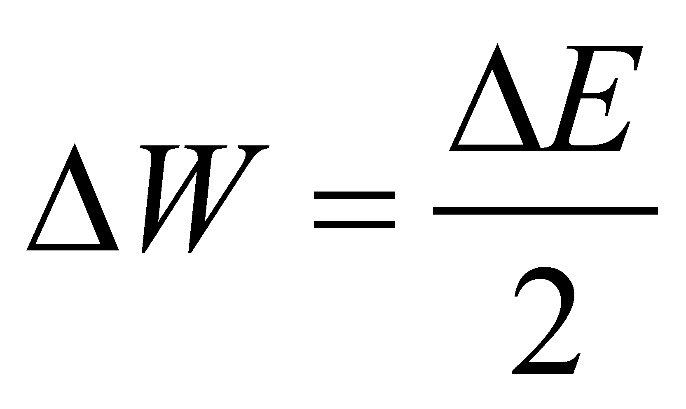

|
|
|
If there are two MS which own (where it is stored) the potential energy, and these MS are interacting one another (the two MS have a common RBS), a permanent energy exchange (through energetic fluxes) shall be generated between the two MS. This bilateral exchange process has the equilibrium state between two potential energy stockpiles as its final processual state, that is a state in which the energy flux (EF) density between the two MS are equal and consequently, the re-circulated EF between the systems are equal and in counter direction (the equilibrium surface of the two EF is motionless against an external reference).
The energy which is stored into a compressed air or into a resort are specific cases of potential energy stored in some MS. By considering a cylinder equipped with a mobile piston which separates in the left side a volume filled with a gas at the pressure p, and in the right side, a compressed spiral resort, so that the resort reaction to be able to balance the force exerted by the gas pressure (see figure X.22.1.1.a).
Fig. X.22.1.1
The energy state attribute of the potential energy stockpile in case of the compressed air is the pressure p, and in case of the resort, it is the deformation distance (compression or extension) of the resort against its initial length (non-deformed).
Comment X.22.11.1: The usual energy state attribute for the potential energy of a gas is the pressure, but at the same time, it could be the piston’s position x from the figure X.22.1.1.a (for a specific temperature and a specific molecule amount, a mole for instance). The same for the resort, the energy state attribute could be the tangential strain from the material (measured with a tensometer) for a specific transversal elasticity modulus G of the material. Obviously, on a case by case basis, the relations between the energy stockpile and the state attribute are different.
The force Fp which is generated by the gas pressure is balanced by the force Fr of the compressed resort, force which is given by the relation , where k is the constructive constant of the resort. Under an equilibrium state, situation displayed in the figure X.22.1.1.a, the two forces are equal, and the piston together its embedded equilibrium surface is also motionless.
Comment X.22.1.2: The major difference between the current physics and the objectual philosophy regarding the approach of this equilibrium state consists in the fact that the physics sustain that there is no energy exchange between the two systems during the equilibrium state, whereas the objectual philosophy asserts that on the contrary, there is an EF on both sides (therefore, a permanent energy exchange), but these fluxes are equal and oppositely directed. According to this approach, the EF source, both as an agent and a reaction, is an energy stockpile; if this stockpile is finite, it can be depleted at a certain intensity (power), and once with this depletion, the force (active or reactive) and the equilibrium state shall vanish as well. The permanent energy exchange between the two systems makes that the two energy stockpiles to remain constant (if the external escapes are null). Based on the issues mentioned into the annex X.10, as regards the equilibrium, an equitable energy transaction occurs between the two interactive systems.
If an energy intake
is generated into the left-side volume, as a pressure increase
 (see the figure X.22.1.1.b), the new force Fp
shall be higher than the arc reaction, and consequently, the piston
shall be displaced on a distance
,
by compressing the resort until its reaction force will re-balance
the gas force. The mechanical work carried by the active force Fp
against the arc reaction is113:
(see the figure X.22.1.1.b), the new force Fp
shall be higher than the arc reaction, and consequently, the piston
shall be displaced on a distance
,
by compressing the resort until its reaction force will re-balance
the gas force. The mechanical work carried by the active force Fp
against the arc reaction is113:
 (X.22.1.1)
(X.22.1.1)
and it occurs until the flux density from the right side of the piston is equal with the left one, namely, until the energy surplus shall be evenly distributed to both media which own the potential energy. This fact means that:
 (X.22.1.2)
relation applicable for this simplified case, in which there are only two material systems which own the potential energy, and these are under interaction. In relation X.22.1.1, we may see that the amount k is a second rank energetical capacitance for the potential energy stored into the arc, the energy state attribute being the deformation . The energy stockpile surplus from the arc is supplied during the displacement of the equilibrium surface, by the force Fp which becomes active until the moment of equilibrium restore.
If the support media are homogeneous, the potential energy stockpile which may be found in both systems is evenly distributed, both in the gaseous medium and in the arc’s material, in case of a cylindrical spiral resort, as a transversal strain on the section of the spiral-shaped rod. If we replace the gaseous medium with a rod made-up from a solid material (see the figure X.22.1.1.c), the potential energy of the compressed arc shall be balanced by the potential energy within the rod’s solid medium, but because the solids compressibility is much more reduced than the gases compressibility, the deformation of its length is undetectable by the human eye. But, even in the solids’ case, there is also a deformation of the medium which is in proportion with the level of the potential energy stored in that medium (see the annex X.21).
113 The relation X.22.1.1 is valid only under the simplified assumption of a constant force Fp (which is independent from the position x); in fact, the situation is much more complicated, but for the purpose of this section, the accurate relation is not so important.
Copyright © 2006-2011 Aurel Rusu. All rights reserved.